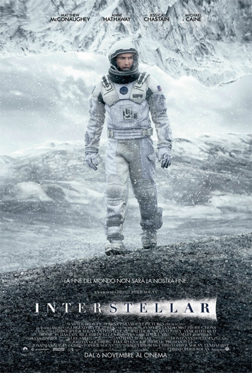

.jpg "Locandina The Social Network")
Il paese di produzione del film Interstellar è una co-produzione tra gli Stati Uniti d'America e il Regno Unito.
Il film, diretto da Christopher Nolan, è stato girato in diverse location tra cui l'Alberta, in Canada,
la California e, in particolare, l'Islanda.
"Interstellar" è un film di fantascienza del 2014 diretto da Christopher Nolan, in cui un gruppo di scienziati
deve viaggiare nello spazio profondo attraverso un wormhole per trovare nuovi pianeti abitabili, dato che la Terra
sta diventando inabitabile a causa di carestie globali e tempeste di sabbia. La missione, guidata dall'ex pilota
della NASA Joseph Cooper, esplora concetti scientifici come la dilatazione temporale e i buchi neri,
con un coinvolgimento del fisico Kip Thorne per garantire l'accuratezza scientifica.
Il film mescola azione, esplorazione, e profondi temi umani come l'amore, il sacrificio e la speranza,
puntando a salvare l'umanità e a riconnettere le persone a ciò che è veramente importante.
Gli attori presenti sono:

| Anno | Premio |
|---|---|
| 2015 | Oscar |
| Empire Awards | |
| Golden Globe | |
| Fonti da Wikipedia | |
Il paese di produzione del film "The Social Network" è gli Stati Uniti d'America (USA).
"The Social Network" è un film del 2010 diretto da David Fincher e scritto da Aaron Sorkin,
che racconta la tumultuosa nascita di Facebook e le vicende legali e personali di Mark Zuckerberg
(interpretato da Jesse Eisenberg) e dei suoi soci. Il film esplora temi come l'ambizione, l'invidia,
la rivalsa sociale e il tradimento, mostrando la creazione di uno dei più grandi social network della
storia e le complessità che hanno accompagnato questo successo.
Gli attori presenti sono:
| Anno | Premio |
|---|---|
| 2011 | Oscar |
| Golden Globe | |
| Fonti da Wikipedia | |
Il paese d'origine di Sheldon, protagonista di Young Sheldon, è una città fittizia chiamata Medford,
situata nel Texas dell'Est. La serie, ambientata tra la fine degli anni '80 e l'inizio degli anni '90,
racconta l'infanzia e l'adolescenza del giovane Sheldon in questa cittadina texana.
"Young Sheldon" è una serie TV spin-off di "The Big Bang Theory" che racconta l'infanzia di Sheldon Cooper,
un genio della fisica che vive in Texas negli anni '80 e '90. La serie esplora le sue difficoltà a integrarsi
in una famiglia e in una comunità dove prevalgono la religione e il football americano, contrapposti alla sua
mentalità scientifica e razionale. La narrazione è affidata alla voce di Sheldon adulto, che guida lo spettatore
nel suo difficile percorso dall'infanzia verso l'età adulta.
Gli attori presenti sono:
| Anno | Premio |
|---|---|
| 2019 | Critics' Choise Awards |
| 2022 | |
| 2023 | |
| 2025 | |
| 2024 | People's Choise Awards |
| Fonti da MYmouvies |